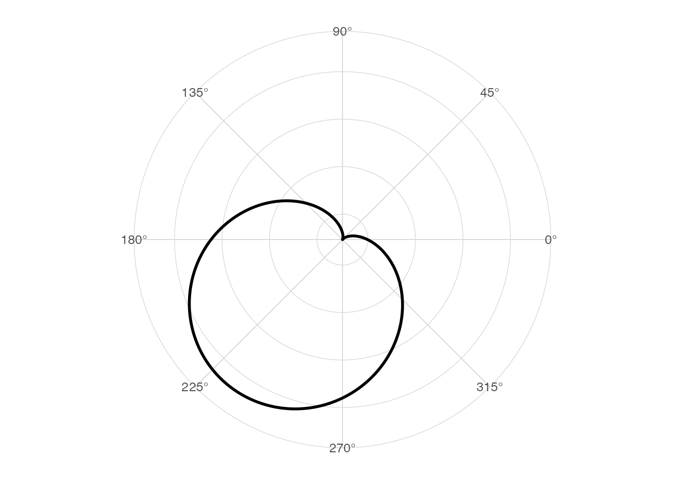
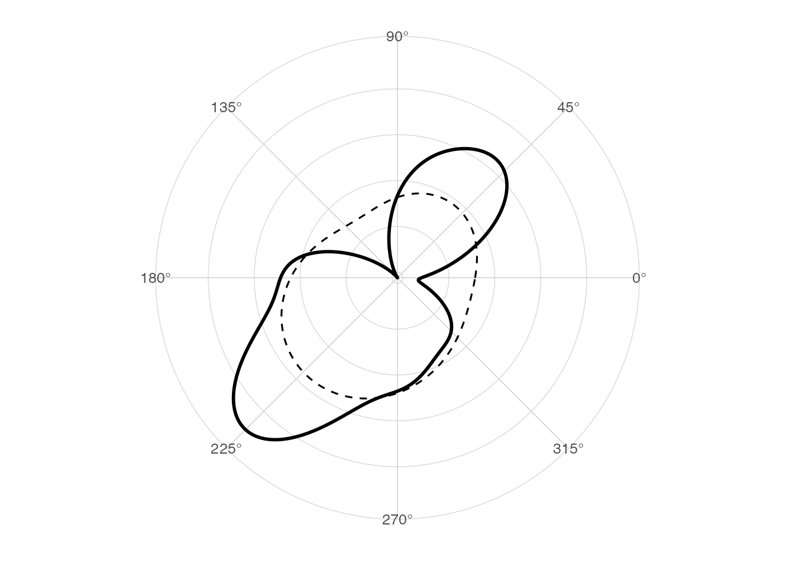
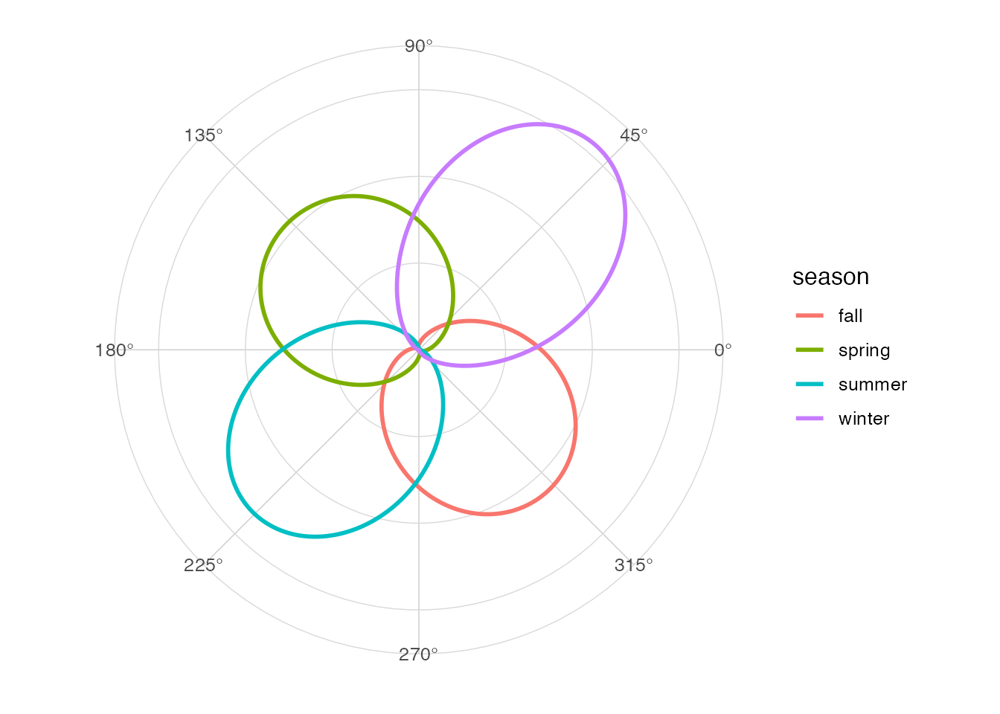
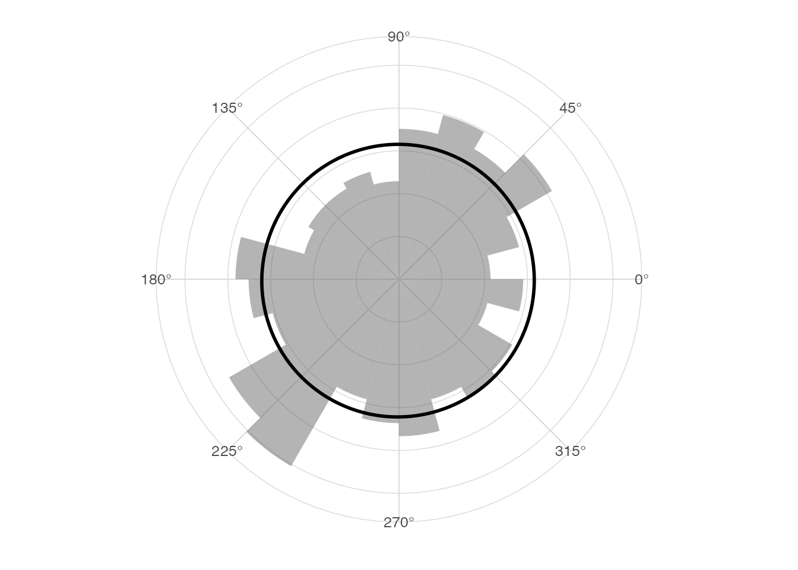
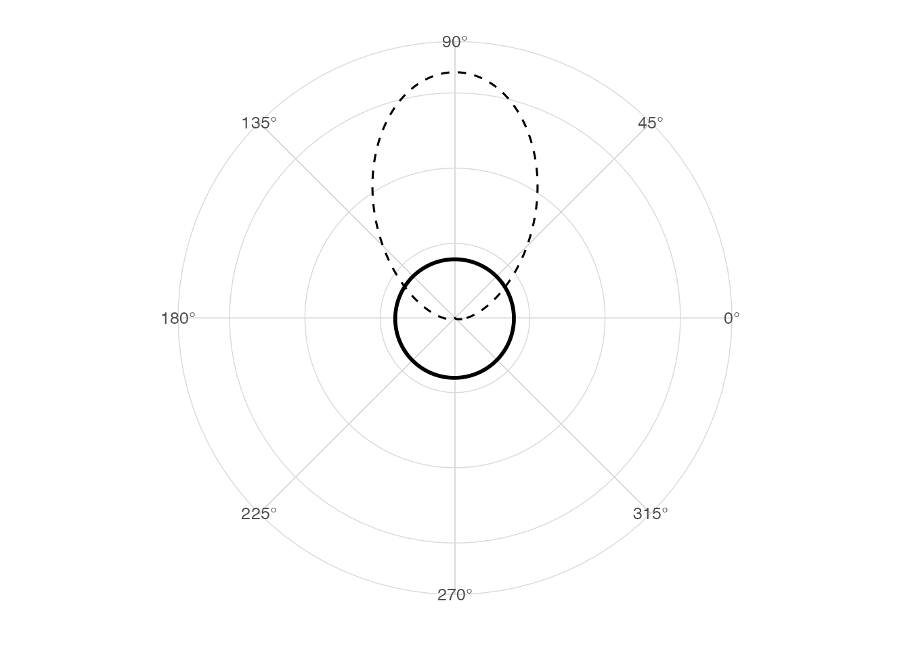

Density on a circle
A circular density integrates to one over the angular period. For
directional data the period is 2 * pi; for axial data the
period is pi.
Boundary at 0 and 2 pi
Linear kernel density estimates treat the endpoints as far apart. Circular kernels wrap around the boundary.
Von Mises kernel
stat_circular_density() uses a von Mises kernel,
exp(kappa * cos(theta - mu)) / (2 * pi * I0(kappa)), where
I0 is the modified Bessel function of order zero.
library(ggplot2)
#> Warning: package 'ggplot2' was built under R version 4.5.2
library(ggcircular)
ggplot(wind_directions, aes(x = direction)) +
geom_circular_density(linewidth = 1) +
scale_x_circular_degrees() +
coord_circular() +
theme_circular()
Bandwidth and concentration
The bw argument is interpreted as
1 / sqrt(kappa). Smaller bandwidths produce more
concentrated kernels.
ggplot(wind_directions, aes(x = direction)) +
geom_circular_density(bw = 0.3, linewidth = 1) +
geom_circular_density(bw = 0.8, linetype = 2) +
scale_x_circular_degrees() +
coord_circular() +
theme_circular()
Comparing groups
ggplot(wind_directions, aes(x = direction, colour = season)) +
geom_circular_density(linewidth = 1) +
scale_x_circular_degrees() +
coord_circular() +
theme_circular()
Rose diagram overlay
ggplot(wind_directions, aes(x = direction)) +
geom_rose(aes(y = after_stat(density)), bins = 24, alpha = 0.45) +
geom_circular_density(linewidth = 1) +
scale_x_circular_degrees() +
coord_circular() +
theme_circular()
Empirical and theoretical density
ggplot(wind_directions, aes(x = direction)) +
geom_circular_density(linewidth = 1) +
stat_vonmises(mu = pi / 2, kappa = 3, linetype = 2) +
scale_x_circular_degrees() +
coord_circular() +
theme_circular()